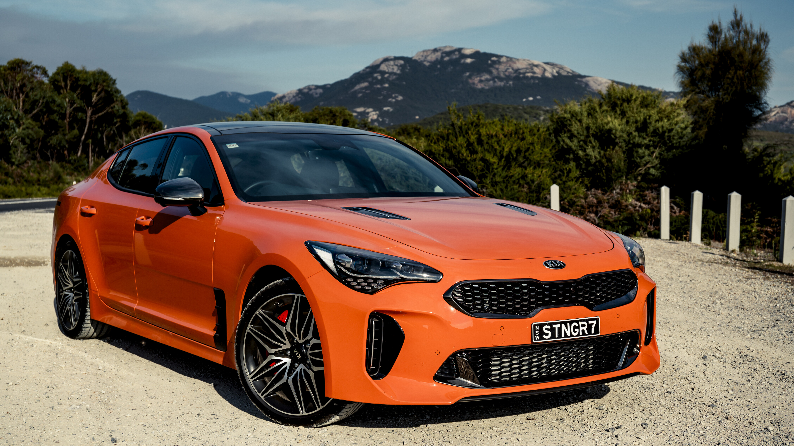
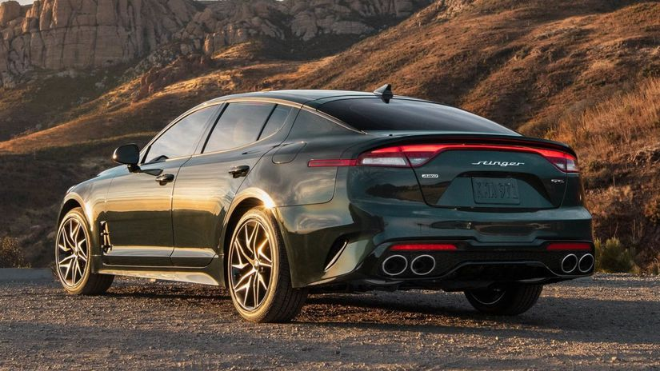
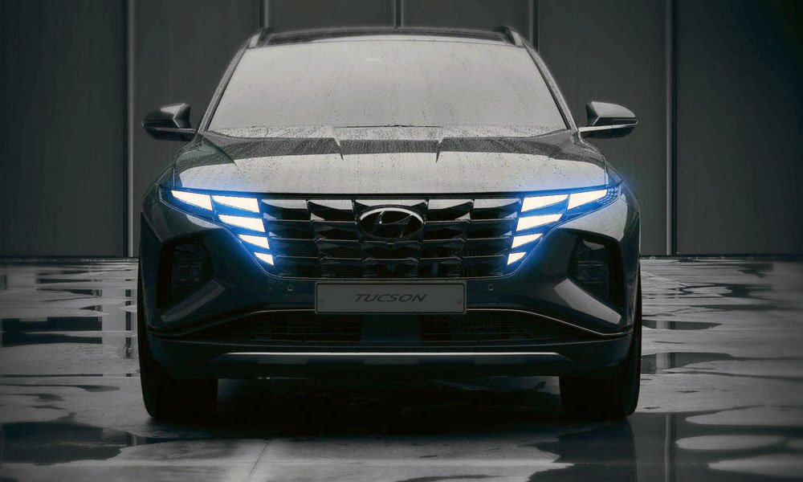
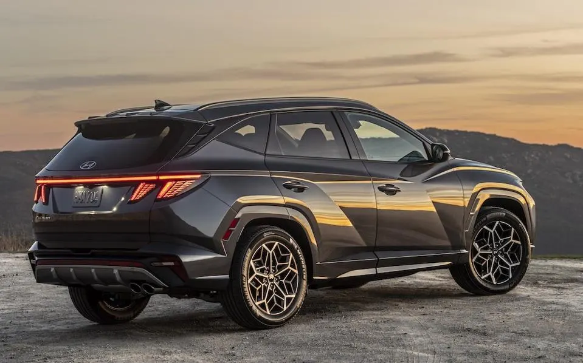
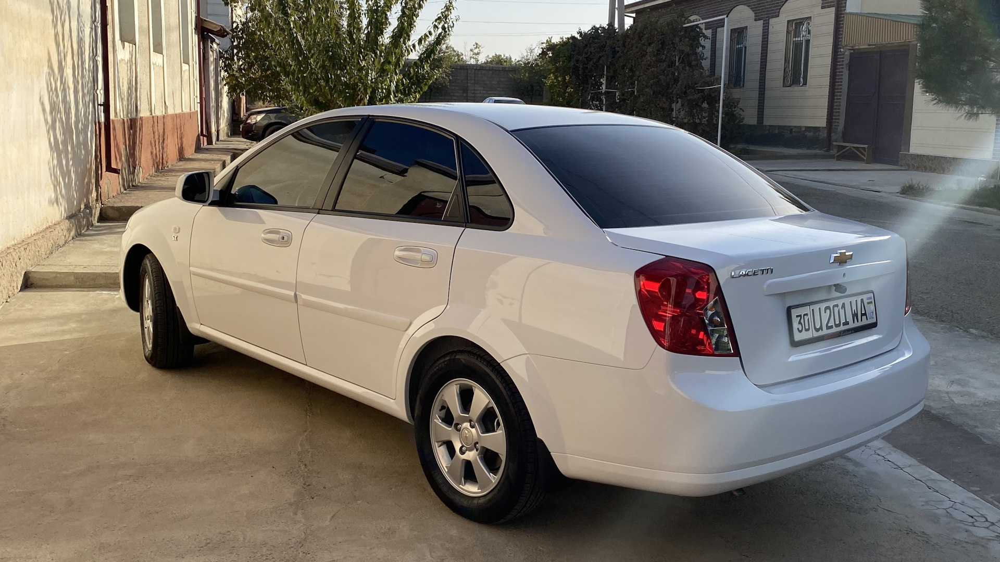

3 автомобилей для повседневной езды.
1. Kia Stinger

Kia Stinger — спортивный лифтбек класса Gran Turismo, выпускаемый автомобильной компанией Kia Motors. Первый прототип под названием Kia GT представлен в 2011 году во Франкфурте. Спустя три года концепт Kia GT4 Stinger показан на автосалоне в Детройте. Премьера серийной модели, разработанной Петером Шраером и Грегори Гийомом, состоялась там же в 2017 году.

С 2021 модельного года спортивный лифтбек получил четырехцилиндровый двигатель с турбонадувом объемом 2,5 литра, который выдает 300 л.с. и 421 Нм крутящего момента. Трансмиссия автомобиля осталась прежней - 8-ступенчатый "автомат".

Hyundai Tucson (Тýсон) — компактный кроссовер корейской компании Hyundai. Называется по имени города Тусон в штате Аризона, США. Tucson впервые был представлен в 2004 году. Автомобиль разделяет свою платформу с Hyundai Elantra и Kia Sportage. В 2010 году был снят с производства (на Украине продолжает выпускаться в городе Черкассы). Tucson получил награду Канадский автомобиль года в 2005 году.

Четвёртое поколение Tucson было представлено 14 сентября 2020 года; дизайн модели был полностью обновлён дизайн-командой Hyundai во главе с Санъюпом Ли, старшим вице-президентом компании и главой Hyundai Global Design Center. Модель оснащена рулевым колесом с четырьмя спицами, цифровой приборной панелью и десятидюймовым экраном с сенсорным ёмкостным управлением. В версии с длинной базой вместимость груза, по уверениям Hyundai, превышает тысячу литров.

Ravon Gentra (в 2005—2015 годах Daewoo Gentra) — компактный переднеприводной автомобиль. В 2005—2011 годах выпускался южнокорейской компанией Daewoo. В 2013—2015 годах выпускался в Узбекистане компанией UzDaewooAuto. С 2016 года носит название Ravon Gentra.
В 2013 году на предприятии GM Uzbekistan началось производство седана Daewoo Gentra — модернизированного варианта модели Chevrolet Lacetti для рынков Узбекистана, России и других стран СНГ.

Daewoo Gentra оснащается 1,5-литровым бензиновым мотором мощностью 107 л. с., который выпускают на ташкентском моторном заводе GM Powertrain Uzbekistan. Коробки передач — механическая пятиступенчатая или автоматическая шестиступенчатая. Автомобили, в зависимости от позиции, оснащались следующими комплектующими:
литые диски;
люк;
противотуманные фары;
аудиосистема;
ABS;
кондиционер;
Гидравлика руля;
полный электропакет;
центрозамок;
Подушка безопасности;
парктроники;
круиз-контроль;
сигнализация.